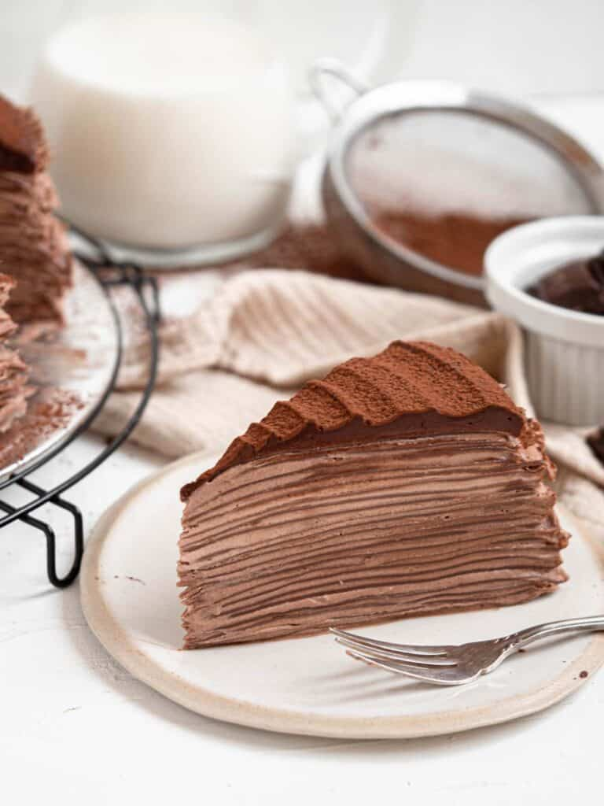

Strawberry Crepe Cake

Description
Light and fluffy chocolate cream sandwiched between layers of paper thin chocolate crepes, topped with a swirl of rich chocolate ganache and a dusting of cocoa powder. This chocolate crepe cake or mille crepe requires no baking and creates a delicious and stunning cake.
Ingredients
Crepes
- 480 ml milk
- 90 g all-purpose flour
- 45 g cornstarch
- 15 g cocoa powder
- 65 g granulated sugar
- 6 large eggs
- 30 g unsalted butter, melted
- vegetable oil
Chocolate Cream
- 960 ml heavy cream
- 40 g cocoa powder
- 200 g granulated sugar
Chocolate Ganache
- 110 g dark chocolate, chopped
- 80 g heavy cream
- cocoa powder to dust
Steps
Crepes
- Combine all the ingredients, except vegetable oil, in a blender and blitz until smooth
- Pour the batter through a fine-meshed sieve into a large bowl
- Heat a medium-sized non-stick pan over medium-low heat, brush lightly with vegetable oil
- Pour a quarter cup of batter, while swirling, to coat the bottom of the pan
- Heat gently until the surface becomes matte, flip with a rubber spatula and cook for 10 seconds
- Repeat with the remaining batter and stack the finished crepes on a baking tray
- Allow crepes to come to room temperature
Chocolate Cream
- Place cream and sugar in the bowl of a stand mixer, and beat for 3-4 mins until soft peaks
- Sift in the cocoa powder and continue to whisk until stiff peaks
- Place in the fridge until ready to use
Chocolate Ganache
- Heat the cream in a small saucepan or microwave until steaming
- Pour the cream over the chopped chocolate and cover with a plate/lid
- Allow the chocolate and cream to sit for 5-10 minutes, or until the chocolate has completely melted, then stir until smooth
- Set aside to cool as you assemble the cake
Assembly
- Build the cake on a large plate or cake board (it can be difficult to move around if not)
- Lay one crepe on the board/plate and spread a thin layer of chocolate cream over the crepe, top with another layer of crepe
- Continue the process until all the crepes have been used
- Top the cake with the cooled chocolate ganache and spread by turning your turntable
- Place the cake in the fridge to set for a minimum of 1 hour before serving
- Dust with cocoa powder to serve!